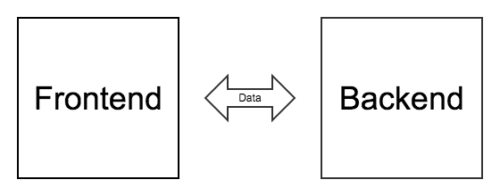

SPA workshop
with Django and AngularJS
Agenda
- Intro
- Coding
- Summary
Intro
Broken code #1
<script>
{% if user.is_authenticated %}
var USER = {
'username': '{{ user.username }}'
};
{% endif %}
</script>
Broken code #2
{{ user.username }} shopping cart:
<%= items.length %> items
Broken code #3
<script>
$('#cart').text(items.length + ' items');
</script>
{{ user.username }} shopping cart:
Problems
- strongly coupled frontend and backend
- HTML manipulation/rendering by frontend and backend
- hard to test frontend code
Single-page application
Pros
- separation of responsibilities
- easier to maintain and test
- ready to use API for other clients (eg. mobile)
- better UX
- easier collaboration within team
- less data transferred
- offline mode
- easier integration with latest frontend tools
- independent releases
Cons
- two apps instead of one
- SEO
- required JS
Examples
- Trello
- GMail
- Twitter (?)
Stack
Coding
Lightning talks manager
Django (Rest Framework)
- models
- views
- serializers
- routing
AngularJS
- controllers
- templates
- routing
Pull & checkout
$ git pull
$ git checkout workshop
Tasks
- Warm-up
- Session details
- Create talk
- Limit talks
- Update talk
0. Warm-up
-
activate virtualenv
$ workon spaworkshop -
run backend application
$ ./manage.py runserver -
run frontend application
$ gulp serve -
increase REQUEST_DELAY
$ edit backend/lightningtalks/settings.py
1. Session details
- create DRF view
- create DRF serializer
- configure Django routing
- configure AngularJS routing
- implement AngularJS controller
- fetch session
- fill HTML template
- add loader
2. Create talk
- fill HTML form template
- bind inputs with controller properties
- add form submit handler
- add loaders
- create AngularJS controller
- fetch sessions
- send data to backend
- handle errors
- show toast message on success
- redirect on success
- force user to be logged in
- assign current user to newly created talk
3. Limit talks
- add new field to
TalkDjango model- define field
./manage.py makemigrations./manage.py migrate
- add validation method in
TalkDRF serializer - update session HTML template
- disable "Add talk" button
- mark talk counter with red color
4. Update talk
- fill HTML form template
- bind inputs with controller properties
- add form submit handler
- add loaders
- display errors
- add
PUTmethod to talk resource - create AngularJS controller
- fetch talk
- send data to backend
- handle errors
- show toast message on success
- redirect on success
- force user to be logged in
- create custom permission